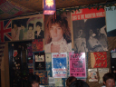
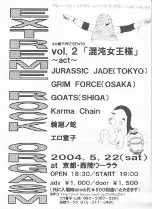

jj crew撮影
2004.05.22京都・西院ウーララ
ＥＸＴＲＥＭＥ ＲＯＣＫ ＯＲＧＡＳＭ Ｖｏｌ．２
「混沌女王様」
出演:JURASSIC JADE・ GRIM FORCE・GOATS
Karma Chain・輪廻ノ蛇・エロ童子

●ＪＵＲＡＳＳＩＣ ＪＡＤＥ’Ｓ setlists
ドク・ユメ・スペルマ
The Individual D-Day
新曲6（I found out)
G.D.G.
新曲７（テロルの季節/前タイトル：Catch Me Who Can In The Rye）
新曲8（未定）
新曲4(9月のひこうきのうた）
メドレー（After Killing Mam〜精神病質〜Go tothe dogs）
鏡よ鏡
●ＭＥＭＢＥＲ’Ｓ comment
ＨＩＺＵＭＩ
ＮＯＢ
10数年ぶりの京都だ。企画のエロ童子てるひこ お疲れ様！
対バンが素晴らしく充実して嬉しかった。
そして、この地にも諸田コウの種が埋まったベーシストが存在した。
そんな存在と、現役として共演出来る俺たちは幸せだ。
SUNS OWLさとぅの種も日本各地に芽を出そうとしてると思う・・・。
GEORGE
ＨＡＹＡ
●ＡＬＢＵＭ
|
2004.05.21 |
 |
2004.05.22 |
|
2004.05.23 |
|
2004.05.22・23 jj crew撮影 |
●BBS comment
京都に 投稿者：NOB-JURASSIC JADE 投稿日： 5月15日(土)21時09分24秒
来週末「SKULL THRASH ZONE VOLUME 1 (1987)」レコ発以来の京都に伺います。
1987年（Xなどと伺いました）以来・・・です。
お時間おありの方是非！是非！お越し下さい。お待ちしてます！
チケット予約いただけるとありがたいです。メールお待ちしてます。
●２００４年５月２２日（土）
京都・西院ウーララ
ＥＸＴＲＥＭＥ ＲＯＣＫ ＯＲＧＡＳＭ Ｖｏｌ．２ 「混沌女王様」
OPEN:１８：３０ START：１９：００
ADV：１０００円＋ドリンク AT DOOR：１５００円＋ドリンク
出演バンド：JURASSIC JADE/ＧＲＩＭ ＦＯＲＣＥ（ＯＳＡＫＡ）/ＧＯＡＴＳ（ＳＨＩＧＡ）/Ｋａｒｍａ Ｃｈａｉｎ/輪廻ノ蛇/エロ童子
NOBさんへ! 投稿者：ゆき 投稿日： 5月16日(日)23時37分27秒
大変遅くなりました。携帯からJJのBBSを見れるなんて初めて(さっき)知りました!汗。藤井さん、ありがとうございます!で金沢だとVANVANV4と言う所があります。又、来て下さいね!京都いいですねぇ!
ゆきさん 投稿者：藤井 投稿日： 5月16日(日)23時57分2秒
僕が、携帯から書き込みをしてたじゃないですか。（笑）
移り変わりの激しい天候です。 投稿者：NOB-JURASSIC JADE 投稿日： 5月17日(月)22時53分52秒
凄い鱗雲でした。晴れてるところと鱗のところの対比がとても美しかった。これぞ自然です。
新譜の為のレコーディングが決まりました！
発売日はっきりしたらまたお知らせします。
＞ゆき 様
金沢も行きたいですね・・・レコ発の際には伺いたいです。
いつのまにか藤井君とやり取りですね。
石川→京都は遠いですね・・・。
＞藤井 様
ゆきさんに教えてくれてありがとう。
おっ！ 投稿者：てるひこ＠エロ童子 投稿日： 5月18日(火)14時13分20秒
新譜レコーでぃんぐ決まったんですね！
おめでとうございます！
やっぱジュラシックジェイドは音源聴いて歌バッチリ覚えたいです。
で客席からノブさんに向かって大熱唱！！笑
もうせまってきましたね！
全力尽くして戦いましょう！
京都には… 投稿者：ゆき 投稿日： 5月18日(火)22時30分50秒
行く事は出来ないです(涙)次回のレコ発の時はJJを思う存分観たいです!金沢に来て頂けるなんて嬉しいです☆NOBさ〜ん、福井は？又来て頂けるのでしょうか？？検討してみて下さいネ。
雨、そして台風 投稿者：jjcrew 投稿日： 5月19日(水)23時08分53秒
まるで梅雨のような天気ですね。
突然ですが、お知らせです。このたび一身上の都合により、私jjcrewの苗字が「池松」から「渡邉（ワタナベ）」へと変更となりました。皆様にはお手数・ご迷惑をお掛けいたしますが、何とぞご容赦くださいませ。jjcrew's roomも更新しましたので、あわせてご覧いただければ幸いです。jjcrewワタナベとして、今後もいっそう頑張っていきたいと思いますので、どうぞヨロシクお願いします！
＞てるひこ＠エロ童子さま
というわけで、ワタナベ姓になってからのjjcrew初仕事が、京都OOH-LA-LA公演になります！
いよいよですね。当日、楽しみにしています。頑張りましょう！
あばよ池松！ヨロシク渡邉！（ギャバン風に） 投稿者：GEORGE-JURASSIC JADE 投稿日： 5月20日(木)14時30分52秒
難しい「邉」かよ！まいったね。なんて呼ぼうかしら。
ワタナベ・ナベ・ナベちゃん・ナベやん・ナベさん・ワッタン・ワたーん・ターナー・・・
おい、ターナーってちょっとかっこいいな。田中っぽいけど。
はっ！下の名前で呼べばいいのか！ヤッさんでいいか・・・
20代前半の頃に中学のブラバンの後輩とバンド（LOUDNESSのコピーとか）やってまして、
ずっと「遠田先輩」って呼ばれてたんですが、もう学生じゃないんで先輩はやめてくれと頼みましたが、矯正すんのに時間が掛かりましたよ。
今はジョージと呼んでくれてます。そいつはライブにも来てくれる「きりまる」です。
やつの本名はかなりカッコいいんですが、ここでは伏せときますね。
そんなわけでex池松っちゃんの呼び方を考えながら京都で暴れてきます。
GIGはもちろん、八つ橋と芸者遊び（てるひこの奢りで）が楽しみでっす。
＞ゆきさん
レコ発ん時にはあちこち行くと思うんで、近くの時は是非お願いしやす！
＞てるひこさん
そんなわけでヨロシクっす（芸者とかスーパーコンパニオンとか）！
嵐は通り過ぎた？ 投稿者：NOB-JURASSIC JADE 投稿日： 5月21日(金)09時31分35秒
またもや嵐です。
なんか荒天が多いような気がします、JURASSIC JADEの旅。
京都に向かって出発です。
見に来てください！
夕日が・・・ 投稿者：NOB-JURASSIC JADE 投稿日： 5月21日(金)19時10分6秒
東名の工事渋滞を避け、関ヶ原・彦根間は中仙道を走りました。古い町並み、山にかかる夕日に切なくなりました。これが、旅の重さでしょうか・・・。今は東名に戻り、京都を目指してひた走りのGEORGE運転ジュラ号です。
すごぉーい! 投稿者：ゆき 投稿日： 5月21日(金)20時15分59秒
NOBさんのナマ現地レポだっ!笑。JJのライヴ行きた〜い。ですが行けないので我慢のコです。京都ライヴ頑張って下さいネ!
LIVEはどうだったでしょうか？ 投稿者：藤井 投稿日： 5月22日(土)23時13分39秒
今日は、ピアノ教室に行きました。基礎はドラムに近いものがあります。
さて、京都というと、僕がJURASSIC JADEを聴きだした’87年ごろに京都のバンドでIDEONというバンドがありましたが、このバンド名は…もしかしたら、あの「伝説巨神イデオン」から来ているのだろうか？
またJURASSIC JADEと対バンしたのでしょうか？
Liveお疲れ様でした。 投稿者：野口です。 投稿日： 5月24日(月)11時03分48秒
22日京都ウーララライブお疲れ様でした。レコードにサインまでして頂きありがとうございました。とても、楽しかったです。また、機会が有ればライブ見に行きます。それではレコーディング頑張って下さい、ニューアルバム楽しみにしています。
先日 投稿者：Kazooyah!!エロ童子 投稿日： 5月24日(月)11時18分51秒
22日はお疲れ様でした。すばらしく楽しかったです。
また是非対ﾊﾞﾝしたいです。
今後も夜露死苦っす。
ありがとうございました！！！！！ 投稿者：NOB-JURASSIC JADE 投稿日： 5月24日(月)18時40分40秒
京都でのライブ。みなさんに感謝です。
エロ童子のメンバーありがとう！
＞野口 様
ありがとうございます！打ち上げも付き合ってくださって。
俺たちもとても気持ちの良い夜でした。感謝です。
NEWアルバムよろしくお願いします。ライブも伺いたいですね、京都に・・・。
GEORGEが「俺のアルバムだ」とサイン出来る日がやっとやってきます。（笑）
＞Kazooyah!!エロ童子 様
お疲れ様！個性的なバンドと対バンさせてくれて（もちろんエロ童子も）ありがとう。
これからもよろしくです。
初めてウルガで見た時よりエロ童子は輝いていた。
お疲れ様でした。 投稿者：ちゅうりん＠GRIM FORCE 投稿日： 5月24日(月)21時51分36秒
遅くなりましたが先日はお疲れ様でした。
やはりいつ何処で見てもJURASSIC JADEはJURASSIC JADEですね。流石です。
また秋によろしくお願いします。モツの美味い季節ですしね（笑）
必ず成長した姿をお見せします。
うちのピチピチグッドルッキングガイズも可愛がってやってください（笑）
遅くなりましたが、ありがとうございました。 投稿者：カーマチェイン宇野 投稿日： 5月25日(火)08時23分19秒
先日はお疲れさまでした。あいさつが遅れて本当にごめんなさい。
本来ならこちらから先にあいさつするべきなのに、
わざわざ書き込みして頂いてもう本当に失礼しました。
当日はいろいろあってテンパりまくってましたが、
いろいろと勉強させていただきました。
ありがとうございます。
リンクフリーとのことなので、カーマチェインのホームページに
リンクをはらせて頂きました。これからもよろしくお願いします。
http://www.karmachain.com
先日は 投稿者：エロ童子クリフ 投稿日： 5月25日(火)12時30分46秒
ありがとうございました、打ち上げの時はみなさんに優しく対応してもらえて素直に幸せでした、これからも精進しますので今後共よろしくお願いします。あと諸田さんのソロアルバムの件お手数かけます
京都の『輪廻ノ蛇』です。 投稿者：慎次＠輪廻ノ蛇 投稿日： 5月26日(水)01時35分54秒
どうも先日の京都はお疲れ様でした。
後、私どもの掲示板への書き込みありがとうございます！
こちらこそ今後ともよろしくお願いいたします。
＞NOBさん
「輪廻ノ蛇」楽しんでいただけたようで光栄です！
今回はゆっくりお話できませんでしたが次回は是非。
http://www.eonet.ne.jp/~shambara
凄みがあった・・・。 投稿者：NOB-JURASSIC JADE 投稿日： 5月29日(土)00時01分40秒
夕べの月は不気味でした・・・。
＞ゆき 様
すいません！レスおちてました。
いやぁ、面白がってくださって嬉しいです。
もっとどんどん書き込みたかったんですが、すぐにいっぱいいっぱいになってしまう俺です。運転か寝るかどちらかになってしまいます。
＞ちゅうりん＠GRIM FORCE 様
お疲れ様！若く・美しいGRIM FORCEに（笑）嫉妬です。
さて、俺たちはそのあらかじめ無いもの・年月と共に失われたものを、何で補えば良いでしょうか？
業の深さでしょうか？思い込みの激しさでしょうか？（笑）
＞カーマチェイン宇野 様
どちらが先なんてどうでも良いんだよ。
感じるものや刺激を受けました。
こちらからもリンク早急にやります。
＞エロ童子クリフ 様
ぼちぼち届いたかなぁ？あれ。
エロ童子の栄養になるといいなぁ。
深い話も良かったよ。また逢える日を楽しみに！
＞慎次＠輪廻ノ蛇 様
激しくも短い曲の連発！めっちゃくちゃ俺のつぼでした。
曲間に透けるBGMもいい感じでした。
また、何処かで共演希望です。
BACK TO